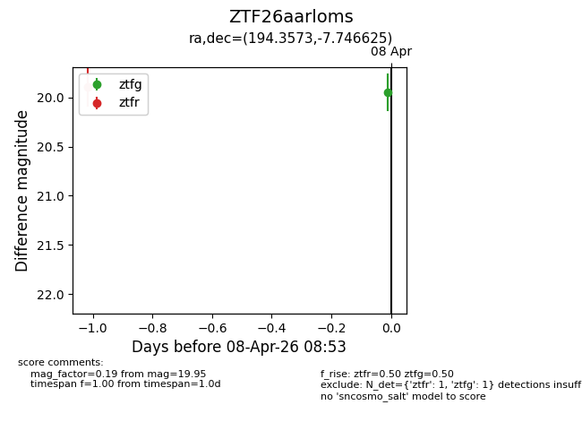
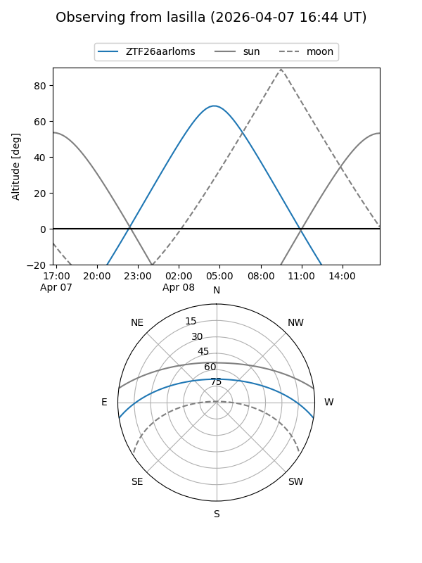
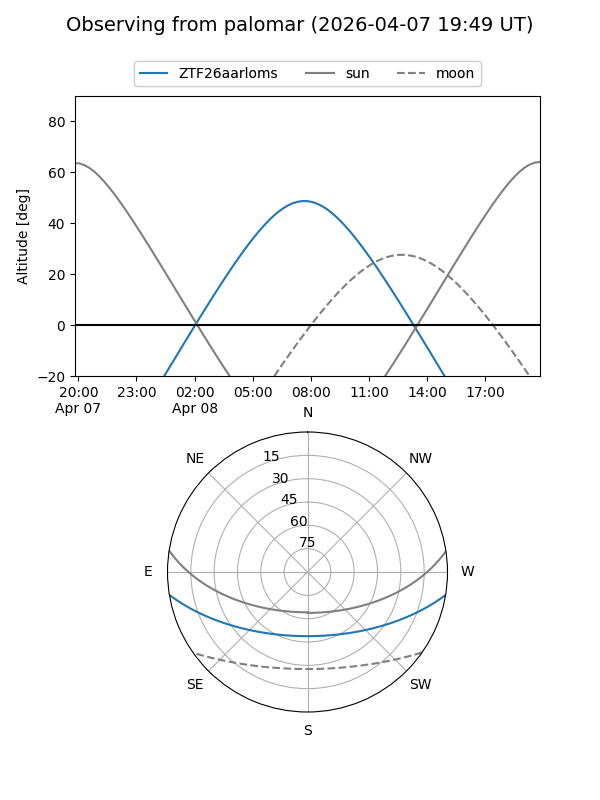
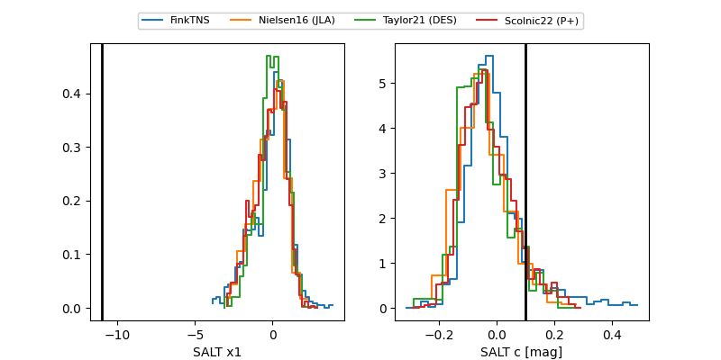

ZTF26aarloms
Target ZTF26aarloms at 2026-04-08 08:58
Aliases and brokers:
FINK: link
Lasair: link
ALeRCE: link
alt names
ZTF26aarloms (ztf,fink_ztf)
Coordinates:
equatorial (ra, dec) = 194.3573,-7.74662
equatorial (HMS+DMS) = 12:57:25.74,-07:44:47.85
galactic (l, b) = (305.5261,+55.09494)
Flags:
Photometry:
last ztfg=19.95, ztfr=19.89
1 ztfg, 1 ztfr detections
Lightcurve

Visibility


Additional plots
